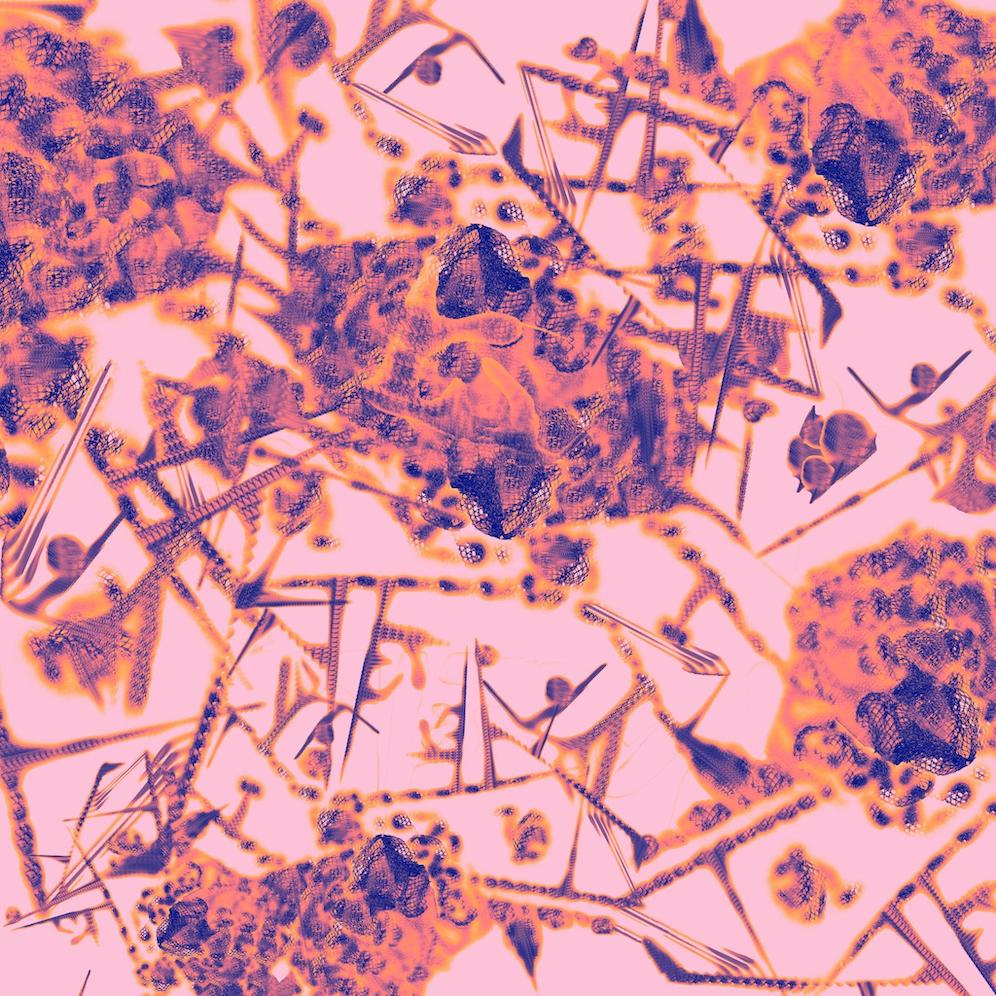

The text for section 1 goes here
The text for section 2 goes here
The text for section 3 goes here
The text for section 2 goes here
The text for section 1 goes here
The text for section 2 goes here
NIGHTSWIM
terrspace
Packing the Night before a Trip to the Desert
Kevin Berstler
A half-eaten moon
is still a warmed celestial speck
amongst marred and violet clouds.
Despite its distance,
its visibility reminds my tongue
of the half-eaten cake in the kitchen.
I'll return to do it when I can,
but first I have a job,
a role to play.
I'm outside Jenny's truck,
looking for a container
I have to empty.
In the backseat
under some blankets,
I see the glinting blue jug.
Upon tugging it towards me,
my forearms feel its weight,
more cumbersome than expected.
Moving around the garden,
pretending it to be gasoline,
I, the rebellious, live in a scorched land.
I laugh at the fragility of the orchids,
dousing their stems and inundating them
until their small soft hairs are severed and submerged.
I mock the thin-skinned marrows,
swerving and stomping through
overgrown, overprotective leaves.
I strike a match against naked air
and flick its flames into the field
just before coming back in, still hungry.
Thoughts of Ash and Time
S. Y. Chen
Spits of ash drift past the smoker's eyelashes, and out over the water, hazing the neon lights of a love hotel. The smoker stubs out his cigarette, though its last regards don't leave him until a few steps later, as he exhales like a dragon.
Does it all go out over the river? The direction of his breath is overtaken by the slightly eastbound wind. Some of it drifts above two women exercising in the park next to a sprout of grass, of mosquitos, of marshland.
Some of it must have entered the jogger. The smoker recalls the old man, in his spotted sweater, shielding his face as he passed by.
The jogger might exhale the smoke into his air freshener, while he curses to his wife about how the freshener has absorbed half of the spring sandstorms and a few of South Korea's bad habits. His disgust would be palpable, leaking out with his coughs as he tries to extract every kernel of his mishap. He laments no man can stay healthy if the world is constantly blowing smoke at him. Maybe this was the faceful that will nucleate until his lungs break.
Maybe it will be mine. The smoker likes to imagine the other air particulates make it to the sea, not because they fall into the river, but because they drifted higher. Joining debris from a car's exhaust, it meanders until it finds where the clouds touch the tips of buildings, and falls out of the air in a drizzle no more than a haze. The raindrops are cradled by the valleys of a shell's sulci forming a grimy sheen.
A couple on vacation two days later at Haeundae beach struggles with a large inflatable whale. As they dig their fingers into the tight black body, it bounds between their annoyance, its undulations spurred by their persistence and tightness of grip. They tell one another they love each other, but the words are mere ornaments on exhalation. He thinks of his two years in the army, while she goes overseas.
He plucks a souvenir off the shore. Now the shell is hers, along with all of the sand and soot that came with it. She, like most people, likes to fiddle with knick knacks: filing with her nails at sediment-filled ridges, caked with old cigarette smoke, and the guilt she brings to Germany.
If he knew, the boyfriend would have imagined her sharing breaths with her new lover. In anguish, tracing the breath with some deep indigo dye, like microscopy patterns. Like tea steeping across his nose.
* * *
How does she feel?
How do they feel?
* * *
Eventually, the shell is rubbed clean. By San. San, a Chinese immigrant in Germany. San, strutting around the room, flowing his long-nailed fingers over it, pontificating about how the overseas Chinese are persecuted. She insincerely steals his kisses and listens while he makes some remark about the systematic socio-economic inequality of Southeast Asia. Maybe the Chinese are to blame for their own demise.
Fires light themselves in his eyes: "Nobody asks to die."
San is a painter: the dirt slips under his nails, already stained with ink. Painter, artist, desirer of kisses from the lips under gold-shadowed eyes. But why would she love someone who struggles to see his own knees? Could he ignite her passion like someone with perfect skin, toned muscles? San has seen the picture of her boyfriend, still in the army.
He cleans his hands, later. Cleans his nails, draining out self-disgust, with some tweezers, water, and soap. It feels like a two hour ordeal. By the end, his hands are raw; sweat stings his eyes; he looks at the bare room as if he's lightened himself fifteen kilos. He dips a cup into the stagnant sink water, and paints, cleaning the brushes with everything he hated about himself.
* * *
"What is it?" she asks. Her voice trembles like eyes roaming during REM sleep. Her voice trembles like paper fliers on an electric pole trying to drift down the street. Her voice trembles like his fingers did, over her bare skin. Her voice trembles like—
—like San's not in love with her anymore. She knows, and she wonders if she would have been happier if she had accepted the depth of his love before it dissipated.
"You can have it." He tucks the painting in her brimming bag, "Imagine I'll be famous one day, and you'll be able to sell it."
"I'll see you again." At the airport, she hugs the portly painter, wondering if San's figure bulging into hers could have been her ideal. Bulging against San's shirt, like an inflatable whale. She shouldn't think like that.
Where does the framed canvas go? Next to the shell. In a one bedroom apartment in Busan. She will wake up with her throat aching, her chest tight, not knowing if it's due to the air particulates or regret for her truncated future with San.
Will that feeling die or walk up to her in the streets of Busan? When she decides whether or not she should break up with her boyfriend.
What ultimately happens to that painting? I don't know.
The smoker is still walking home, his mind drifting like ash above space and time, living five lives, over two years, in five minutes.
His imagination keeps his mind off a text message that says something along the lines of "How have you been? I miss you."
The joint between common decency and honesty, bending always in the direction of silence.
He stops under a streetlight, lights another cigarette, and watches solitary headlights. He gives each driver a story: an aching love affair to assuage his loneliness. There are so many potential stories, dripping with love lost out of slander or friends estranged out of spite.
* * *
How long can you pretend you still see the smoke?
As
it
rises
How long can you hold it in your gaze, as it passes beyond the fringe of a neon light?
Untitled (2018)
Ryan Lucy
Leap of Shame
Kevin Berstler
I'm bouncing up and down on one of those little trampolines designed for kids or exercise, I think, and Yusef and I continue talking about an evolution of comedy, from Aristotle's view on wit as educated insolence in Rhetoric and the Juvenalian satire in Orwell's Animal Farm to the deep fried and bass boosted bottom texts of today's humor.
He asks me if I know of some veteran-turned-memer, and I don't, so naturally I make a joke about sucking dick, and before reaching the punch line, Betsy and I make brief eye contact while she sits on her back porch with a book in her hands, and I'm silenced, questioning how much of a child I am wondering what keeps me busy.
My embarrassment disables me from continuing the joke, for I know that she knows what I just said, and I'm stuck up and down with my shame. Our regular conversations deal with contemporary pedagogy and policy in the local public schools, but I know that she knows what I just said.
She comments, but I can't hear her because I know that she knows what I just said, and all I can think about is the fool I am as I'm bouncing up and down.

Jacqueline
Jade Njo
Untitled
terrspace
Self Portrait circa 2016
Jade Njo
(Un)rooted
Alex Leto
I never thought I'd like weeding
that moment of completeness
feeling root slip from so
many feet of damp
soil: Eradication of impurity; intruder
creeping in for weeks

Isla de San Andres, Colombia Caribena
Mikaele Porter
Tower 32
S. Y. Chen
Darryl slid three quarters into the vending machine and weighed his options. The machine valued the antiques at 500 ¢. It gave him the options of directly transferring to his bank account, directly paying his debts, or gaining credit with three of the largest food dispensaries. The number, which had originally made his heart leap, now depressed him when he looked at his debts. 500 ¢ would have allowed him to buy almost three weeks' worth of decent food, but only covered half of this month's interest.
The machine flashed a time out warning,
30 SECONDS REMAINING
He hurriedly transferred the money to his debt and immediately regretted it. The machine went dark briefly, then began to cycle through a stream of catchy phrases, asking for anything from recyclables to old books. He tried to imagine what was behind the machine: a giant shelving unit filled with oddities.
Do you have time to get dinner? He sent the Thought directly to Emily's cognitive implants.
At first, he received no response. He checked the empty street for vehicles, then crossed to the walk by the railing and looked out. The buildings around him stretched up and down, the shiny metal reflecting the neon lights. Level number, names of various businesses, and directions to different districts distorted across windows, lighting the entire area even though the sky above held little light.
Emily lived across that unnerving divide. Above her house was a restaurant called:
The place seemed familiar, and Darryl always wanted to go there, but Emily hated the place. They always ate where Emily preferred because Darryl was restricted to Class 2 rations. His income was pre-divided neatly between his debts, his rent, and his living expenses. If he bought a Class 4 meal, he wouldn't be able to eat for 3 days.
I could eat. I'll meet you at the crossroad.
Darryl took the elevator down to the 12th floor, where the two spines were joined by a small walkway. He crossed over to spine R3-4 and waited. He met Emily on the first day of his job, cleaning under her desk. Like all industrious archetypes, Emily was welcoming, keen, kind, and energetic.
She stepped off her own elevator and waved to him exuberantly, "Hey, how was work? I finished earlier, but then I thought of something, so I decided to remote in for a little while. I was thinking of checking out this place on the rim, like R-20, or something."
"You didn't fulfill today's fitness requirements, did you?"
System's managers, like Emily, spent most of their day sitting, and thus had a required exercise quota to fulfill after hours. These were met on a weekly basis, making the streets crowded every Friday. Today was Tuesday, but Emily liked to keep on top of her requirements. In contrast, Darryl was a janitor and spent a large amount of time on his feet, going up and down stairs. His main requirements were nice shoes and monthly physicals to make sure he was following ergonomic cleaning strategies. Failure to comply resulted in reductions in meal class, downgrades in living quarters, or less pay.
"There's SO much to do at work. They're thinking of bringing one of the dead towers back online. Of course, that means we need to assess how many people we can spare. If we make a few major policy decisions, we could increase our population donation by 15%. That's pretty substantial. Anything that helps get more towers running is good."
"You think you could make it so I got shipped out?"
She shook her head, "No, of course not. I would do a-n-y-t-h-i-n-g to keep you here. I need a friend, don't I?"
He rolled his eyes, "I know you already have plenty of friends at work. But you're right, if I got transferred to a new tower, my work hours would increase, something I'm not keen on."
"And what do you do with your free time? Stare over the railing?"
"Sometimes, I go to the AR. Read history. It's all about the potential to do things. Speaking of which, I sold the coins today."
She checked her heart rate through her cognitive implants then pressed him to walk a little faster. "You didn't have to do that. I don't think you should have done it. You don't even know what they meant to you."
"Well, I'm not going to find out by letting them sit there."
She started jogging, so he did as well. She didn't respond, which made him feel bad. He shouldn't pressure Emily about his memories. He suspected she knew everything: the extent of his crimes, why he had such outstanding debt, what he used to do. There was no other reason for a wealthy system's manager to take so much interest in the life of an indebted janitor.
When they finally reached R-20, he could see out past the remaining spines to the landscape beyond. The lights of the other towers shone brightly in the distance, illuminating the hulls of some empty towers yet to be activated.
"Which one do you think it will be?" He pointed through the spines.
She shrugged, "That's a little above my paygrade. I assume they'll pick one that makes the most sense from an efficiency standpoint."
The towers were all the same. They each had a center nexus surrounded by spines that decreased in height radially, and functioned as neighborhoods. Each person had their place in the neighborhood, and in the tower. As the population of the tower increased, duty shifts would overlap more, and people had more free time. When all the towers had enough surplus people, they would open another tower.
"I wonder what life is like out there." Darryl motioned at the dark space beyond the perimeter. "Is it just the bugs and weeds until someone shows up? Maybe a tree or two splitting the concrete?"
"I like to think the bots keep the sites pretty well organized. From what I've heard, it takes a lot to bring the sites back online. They were constructed quite a while ago, when they thought more people would survive."
They ordered some hamburgers, and he dug right in. The taste was delicious after subsisting on Nutrition Pack #5 for the last two weeks. He savoured each fry, digging them into his milkshake. Emily laughed at his expressions, then morphed her face into one of curiosity, "How would you do it?"
"Do what?"
"Make the transition."
He thought about it. It seemed to be a simple tradeoff. Everyone worked eight-hour shifts and they overlapped by three hours with the next crew. Now people would have to work nine-hour shifts that overlapped by two hours? Ten-hour shifts. There had to be some efficiency trade-off by scheduling certain jobs, in proximity to other jobs. He shrugged, "I don't know. Not my problem."
She took a drink of her soda to hide her disappointment. "It will be when you're working more."
"And I would appreciate it if you didn't make too many changes with my shifts."
They talked a bit more about their days, before they ran back to the inside of the ring. After dropping Emily off, Darryl went to the 14th floor of R3-4 and stared in the other direction. He could see the doorstep of his apartment complex, the line of vending machines he had just been standing at, and a rugged AR booth, just before the walkway curved around. He liked this view better. It felt less foreign, and he could hear the patrons coming and going from Pho 76 or one of the nearby restaurants. R2-4 was more subdued than R3-4; less glamorous tenants, he supposed.
He cast a glance over at the restaurant as the door swung open. The heel of a dress shoe kept it from falling closed again as the conversation continued.
"Thank you, this was a great evening, Bui. I'm going to try making it over more often. It's just been hard." Her voice resonated with him, and he craned his neck so he could see her face.
A hand took over holding the door and the woman walked out backwards, closing the door gently behind her. She was short, around 155 cm, with a single long braid that fell down from her otherwise cropped hair. Something clenched in his chest as she turned around. He spoke before he could help himself.
"Wait."
The woman froze, looked at his face, then tried to keep walking.
"Do I know you?" he asked, feeling with an absolute certainty that he did.
They stood there for a while, people passing by. Her face was drawn, becoming more and more stressed as she could not deny recognizing him. Finally, not without tenderness, she whispered, "Oh, Darryl, I can't."
Then she walked away, and he was alone.
It had been five months. Five months of paying back unknown debts, five months of wondering why he was so unhappy. It never got easier. He woke up sweating from dreams that had no form and spent night hours wandering streets hoping the locations would spark recollection.
It was New Year's, and he had been staring over the railing for about three hours now. Emily was gone. She had a few parties to go to. People Darryl didn't know, and she didn't care for him to meet. Her face was apologetic when leaving, a general refrain from their more recent interactions. Their meals together had become shorter, farther in between.
He braced himself as yet another person tried to take his place at the front of the line. He shot them a quick glare, which they returned before fading back into the crowd.
A few moments later, all the lights around him switched off. He gasped, like a child as the show began, starting at the base of the nearest tower, and hopping backward across the others into the night. The barrage of colors was highly coordinated, designed to look continuous from all angles. For a moment, he took his eyes off the main show, and looked back across the crowd. Faces flickered from blue to green, as their own tower put on its display.
"There, there." At once, people started pointing excitedly towards one of the darker spots in the trees. A single point of red light, trailing smoke, peaked for a moment, and then extinguished. Shortly after, a small green light shot up in another dark patch to the east. Everyone held their breath, waiting for more but eventually focused their eyes back on the main show.
"Only two groups made it this year, huh," he heard someone mutter. "Not surprised."
He instantly let go of the railing in shock and let the sea of bodies surging forward push him back into an emptier space. He resented the epiphany, because he felt as if he was ignoring the possibility on purpose. Now that it was obvious, he was driven to look up the location of the nearest history museum. With one more reluctant look at the dazzling display, he left the outer radius.
The museum was almost empty when he got there. Most of the lights were dimmed to conserve power, but a spotlight appeared over his head as soon as he entered. It followed him around as he drifted past various exhibits, until he found a service node.
He engaged it with his cortical implant, and it immediately began its welcoming routine.
Hello, welcome to HCM automated service unit please select one of the…
Scientific consultation. He Thought at it.
Our facility offers many consultation services such as: interactive holographic storytelling, thesis revision, research—
Faculty scientist.
Our faculty scientists are busy, perhaps—
Faculty scientist.
Alternatives to in-person consultations include—
Faculty scientist.
The module buzzed a little in annoyance and went dark. He tapped it a few times, then leaned against the wall. Just as he was about to give up, a slight hiss startled him, and the wall next to him slid open. He was greeted by a sour, middle-aged man, with grey temples and baggy eyes. Historians, like other scientists, were only hired if they were faultlessly devoted to restoring the Earth's ecosystem. They were high strung, overworked, and this one was no exception.
"How can I help you, Darryl Winston?" His voice dripped with disdain.
"I want to inquire about some artifacts I sold to the vending machine."
"For the last time, there are no returns for surrendered items. The government does not force people to give up their heirlooms, but it is under no obligation to return them. If you are concerned about fraud, you can fill out the necessary paperwork." He turned on his heel and reached for the button to close the door.
"Actually, I would like a follow-up," Darryl blurted, trying to sound as scholarly as possible, "I turned the artifacts in because I was interested in their history. They were given to me by a friend, he passed away before he could tell me where they came from."
The scientist pursed his lips, then motioned for Darryl to follow him. He was immediately blasted with compressed air and UV light to eliminate some of the contagions, before being allowed in a small office.
Darryl mentally checked the public database for the scientist's name and found it to be Patrick Moreno y Reyes. Patrick pulled up some black and white images that looked like patches of coral growing out of ravines.
"This is an electron microscopy surface image. This coin was 2025, a rather old one. You can see from the features that the coin has not been maintained, but exposed to natural decay processes. This indicates that this is a recent archeological find rather than a family heirloom."
"Are all of them like that?"
"Yes, they were most likely excavated from the same site."
"Do you know where?"
Patrick smiled, then quickly flattened his face, "Of course, I know where. The soil composition of the different regions causes different nanoscale decay patterns."
He pulled up a map. "Here's the land nearby. Around where Towers 30-32 are constructed. There's a lot of other things I could tell you, as well. For instance, we believe that the item was under the tower construct for quite some time. Though it aged due to environmental factors, it is also well-preserved. This makes me think that the soil around it was more compact and didn't see natural water flow."
"Dr. Moreno, thank you. This information is incredible. Could you forward a copy to my files?"
"Sure, your friend was most likely an Interwalker then?"
"An Interwalker?" It was the possibility that Darryl had ignored, perhaps foolishly, perhaps out of denial.
"Yes, most surface archaeology is done on other parts of the planet. If the coins came from nearby, your friend wouldn't have had a permit." The historian cleared his throat: "Well then, mystery solved. You have your answer, and I should be working. Please leave the way you came in."
Darryl turned his face upward and closed his eyes. The pale winter sun fell on the rooftop of Level 50, R-10, and dispelled the slight chill that affected the lower levels.
Emily stirred her tea, "Isn't the view marvelous? The vegetation diversity has really improved over the last thirty or so years. A lot more continuous too. Do you remember being a kid and seeing…" She broke off, "Well, I mean, you've seen the slides in the history museum. And the AR. The geo-engineers and biologists have really done wonders."
He nodded. "Did you see the light show?"
"Yeah, they also did some great work. Can't wait until the next tower comes online. Then we won't have so many dark spots."
"I saw a couple of flares go up."
She bit off half a biscuit, and frowned at it, before placing it on her saucer, "I didn't notice. The main display IS kind of the point."
"It made me think about the coins, the ones I sold. So I went to ask at the museum, and they said they were from an archeological expedition."
Emily broke apart the cookie, and pushed the crumbs into smaller and smaller crumbs. "I don't think you should've sold them."
"But I had to know. I've been so unhappy, and I wanted to know more about who I am."
"Isn't that the point of the traumatic reset?" Her voice was rather sharp: "The bots wouldn't have erased your memory if YOU hadn't given them permission."
"How can I know if I gave them permission if I can't remember that?"
"Because bots have safeguards. Humans were there too."
"I feel like I can't be responsible for these debts if I don't know what I did to cause them. I'm just saying that I want to go there and see for myself."
She gritted her teeth, "I just... No. You can't. You act like you're a victim, but literally everything that has happened to you, since the beginning, has been your responsibility."
He looked quickly around, but thankfully her raised voice hadn't attracted much attention. "I think I need to know what I did wrong to improve myself."
"No, you won't change. This is exactly what happened last time. The questioning, the speculation, you giving up your career for some stupid wandering in the woods." She held up her hand to stop him from responding. "You were brilliant, you know. I'm not supposed to tell you this, but you were one of the best system's managers I ever worked with. Until you started buying into all that idiocy: What if the bots are lying about the dismal state of the planet? What if we could build settlement sprawls like in the history novels? The rules of the towers were too constraining, so YOU destroyed YOUR marriage, your career, our friendship. And then, like the coward you are, you chose to have your memory erased so you could just start over. Now, I get to watch you leave, again? For how long?"
He was staggered by the magnitude of her words, but stuttered out, "Not long; maybe a few weeks. However long it takes."
She drank the rest of her tea, and grabbed the last biscuit off the table, "Fine, but I'm not going to be here again when you come back. I'm the ONLY one who volunteered to help rehabilitate you. What does that tell you, Darryl?"
He sat at the table after she left, ruminating on her outburst. His head throbbed dully. It was hard to process her friendship as a true loss. While she had been kind to him, he didn't feel as deep a friendship between them as she obviously did. He got into the elevator and rode it to Level 1. The base of the tower was remarkably plain. The human residences, restaurants, and employment all began at Level 7, meaning the only occupants down here were a few bots delivering packages from tower to tower. They didn't give him a glance as he walked past them to the edge of the furthest ring.
In the last spine, he found an alcove, and connected to the terminal.
Darryl Winston, do you wish to leave Tower 12?
Yes.
We will go through the necessary steps for you to become an interim member of society.
1) Please notify your employer of your absence. You will be allowed to use your holidays. Once your holidays are used, you will be terminated. When you return, your position will not be guaranteed. In addition, after two weeks, your residence will be surrendered. If you do not notify your employer, you will have two weeks of wage debt added to your account. Do you wish to notify your employer?
Yes.
2) Please take some supplies. You may have food for two (2) weeks, a flare gun with six (6) colors, blue meaning "AID NEEDED". You will have a blanket, compass, water bottle, filter, and fire starter. All supplies will be added to your wage debt. You may refill supplies at any tower. Please enter how long you will be absent.
Two weeks.
3) You are now being informed that all property and HIGH ecosystem damage will be added to your wage debt. This includes wild-fires, endangered species loss, etc. Please take the provided field guide on RARE and EDIBLE species. Please note that general ecosystem upkeep and pollination require bots. Do not disturb bots. While leaving the tower is not a criminal offense, disturbing bots is a criminal offense.
Informed.
4) You are now being informed that when you reenter society, the costs of your medical exam and quarantine will be added to your wage debt.
Informed.
The screen went dark and a panel slid open revealing a neatly packed backpack. He pulled it out, and slid it on, noting how perfectly it fit him. He gave the machine a small smile, and then walked over the edge of the concrete perimeter into the forest.
He kept his footsteps light, often looking back to make sure the plants weren't too wilted under his step. The signals probing at his cortical node became dim, and he began to feel a little lonely. In the VR rooms, forests were full of life. Gnats stuck in your teeth, birds chirped incessantly, streams with tadpoles danced around rocky beds, and the wind pushed dappled patterns around the forest floor.
All he heard was the sound of his own footsteps, all he felt was the rough bark under his fingers when he needed to reach out and steady himself. He estimated he had walked three hours before he had to stop. His breath was coming in gasps, and he leaned over his hands on his knees. As his eyes focused on the group, he saw a stream of insects wandering across the leaves. He checked a nearby log, then sat down, and let one crawl along his hand.
He chuckled, remembering the old trick of adding ants to elementary school ecosystem simulations to increase biodiversity. The expression 'At least the ants survive' was used to mean a project completed in an annoying or barely functional manner.
The ant bit his finger, and he flicked it away. For a moment, his voice was the only sound in the quiet. After another four hours of struggling onward, with many breaks, he lay down on the middle of the forest floor, stretched a blanket over himself, and fell asleep.
Two days later, he was incredibly sweaty, tired, and sore. The inside of his mouth was constantly dry, but he'd only found one stream to fill his water bottle at. He'd followed it as long as he could, but it had inevitably split from his trajectory. His clothes were already sporting rips in the knees from falling.
He took out his compass again to reaffirm his trajectory, then blinked. He saw light reflecting through the trees, and quickened his step. The forest opened up abruptly, roots ending in tall grass that fell away a meter later to hard concrete.
There the similarities between his tower and this one ended. Immediately beyond the border were several raised sheets of metal, supported by piping. The edge of the concrete was broken through in several places and the dirt dug away to form troughs.
He approached the nearest crude structure, and found it much larger than he originally thought. The entrance was obscured by a worn cloth draped and rotted at the bottom. A layer of woven branches lay under the cloth. He pulled them aside, wincing at how easily they tore and cracked. Inside were four beds and a table, scattered open boxes that functioned as storage units. One box was full of clothes, another piled with booklets. He picked one up.
Sturdy Fence Making Part 2.
He flipped through the pages, where drawings, childish but informative, laid out how to assemble split wood using long strands of wiring. He picked up the other titles: Irrigation Part 1, Cow Slaughtering Part 2, Shelter Construction Part 5.
He heard the sticks behind him crackle and turned his head too quickly. He hit a low-hanging piece of iron, and staggered back, tripping over a box. A rather large utility bot struggled against the branches, its foreleg caught between two sticks.
"Ah, it is just you, Darryl Winston. Nice to see you again."
The mental query Darryl sent to it failed. The bot flashed a few lights to indicate its amusement.
"You don't have a high enough clearance level to access my specs, I'm afraid."
Darryl helped the bot untangle their appendages and they walked out of the shelter. "What happened here?"
"A rather successful colony. It lasted 32 years, longer than most."
They continued, side by side, looking through the metal shelters, coming to a region where the concrete had been utterly destroyed and removed. Almost one-third of the circle had been excavated and overgrown. He knelt by the side of one of the fields and found the husks of seed pods still lay on the ground.
He turned around, focusing on the spines of the tower. The sheathing was missing at the bottom and a lot of the wiring was torn out, presumably used to bind the fence posts.
"This place is beautiful."
The chaos of the disturbed metal, the stumps of spit trees, and the remains of rotted fruit at the bottom of a tiny orchard brought tears to his eyes.
The droid laid his foreleg on Darryl's shoulder, "Yes, it is quite nice. I'm sorry it couldn't last."
"Why did they leave?"
"The same reason that all of these colonies have failed over the years. Disease, then famine, primarily. Biologists stole the crops and animal prototypes from the lab. They are all raised in highly protected environments. When your food supply is dependent on only a few crops with poor immune systems, it is destined to fail. Though they lasted longer than most."
"And I lived here."
"For seven years. I'm glad to see you again. You are not the first to come back. A few of your fellow colonists have also figured out their origin. I enjoy providing them with closure that the trauma reset could not."
"How many people died?"
"Fifteen. It was hard, as many were young. It was especially hard for you. As a system's manager, you recruited quite a few people in your seven years. You were a good leader. It was clear to us you could not live with that guilt, especially when your wife refused to speak with you. So eventually, we offered a trauma reset. Unfortunately, we had to erase the bulk of your memories, including your childhood training, as you were no longer fit to be a system's manager."
"Why didn't you stop them?"
The droid crossed its forelegs, "You are not children, Darryl. We have never lied to you. We tell you everything. The population of humanity is now at 302,456, which corresponds with the Tower Project goals. The ecosystem restoration project is 13% complete. We have perfected training routines so humans will be satisfied with their jobs, and we have lifestyle routines to help with appropriate mental health. Yet sometimes people are dissatisfied with their lives, and they will form these external communities. Inevitably they will die because the Earth is in no state to cultivate.
"And truth be told, we did not monitor the Dead Towers much. A few Interwalkers have lived in them before, though they mostly take advantage of the shelter and food stockpiles. The forest bots did report the removal of vegetation, however it was not damaging to the overall ecosystem, so we did not investigate. We only saw the extent of the damage when the rescue flares were sent up. Unfortunately, given your contract, the bulk of the damages was split between the surviving members of the team."
Is it all true? He thought to himself. Did this village fall apart, or was it destroyed?
He thought of asking the droid to take him out, beyond the tower region, beyond the windshields and weather softeners. Surely, they must be close, and he could have proof the Earth was ruined. But what then? He would never know if the bots would fulfill their promise to restore the lands to human control.
The only answer was to go home, perhaps get married and raise a family, work for the success of humanity in hopes future generations would re-colonize the planet.
"That is a prudent conclusion," the bot noted, obviously eavesdropping.
"In thirty years, things could get better. I could try again."
The droid sighed, "Certainly, as you wish, Darryl Winston."
Back to Palo Alto 5
Diego Blanco
Inviting ourselves to our wedding
Lisa Gay
Wrinkles on your lips chisel into my smile, one on the other—coupled.
Wielding precision instruments, you manage to wring me open;
So I list simple tools you'll need to traverse dissipated
landscapes; we stand on the edge. Still,
you hold my words in your palm and balance the invitation.
You take both and I bring you my unknown, our hands wrapped
around one another. Attuned to minute revelations we are rapt
in discovery. Small accumulations every couple
of moments to unearth flaws and accept the invitation
to laugh at ourselves and each other, eyes crinkled and jaws open.
Parts of us are denser, stay buried for longer, hardened from fear. Still,
we expose ourselves as vulnerable, and I fear dissipation.
Instead, you read me comforts from day to day and my fears dissipate
replaced by your dusty pasta sauce in the cupboard. Wrapped
in blankets, I am a happy burrito; my eyes linger, still
on your quiet confessions, and after a pause they are coupled
with my own confessions, each part of me open
and raw with love's invitation.
Suddenly my future is coalescing around possibilities where you're invited;
a future where I want the fridge cleared out and you to make lettuce disappear,
where we traverse through magical western-penned
landscapes, our reality weaving on and off pages of books wrapped
in our voices. Between not-so-subtle jibes we discuss this growing vision—as a couple.
Lost in peace, or in thought, quiet moments of — we accumulate in stillness.
In a moment after countless others there is clarity in the stillness.
And I give—all my trepidation lost in your loving gaze—an invitation:
can we, independent of time, be a couple?
As you answer, my restless dreams of continuous blanket theft dissipate
into reality: this is the movie wrapped—
Your endless nested eccentricities are mine to open.
Together we craft inside and outside the lines of tradition, open
to those with whom we share our love. Still
every color, flower and fabric just surface wrappings
to multitudes of blanket moments—inviting
deeper partnership after the party dissipates:
aspirations, discoveries, hardship and support shared: now coupled.
Each small affection glows, signaling an open invitation
to deepen the next. We distill these moments lest they dissipate.
We put our roles and wrappings in a mausoleum—a newly married couple.
Checking off the Honey-Do
Vy Duong

Sunday Morning
Vy Duong
Geotraumatic Birth
Jonathan Marquez
Halcyon rustling brings once closed eyes to wide birthing, as a charging sun floods into accepting retina. Foliage crowns my vision, green tones in opaque blades held high as if atavistic knights raise forth weapons in deistic worship. Wings on high as valkyrian shapes bombard softly, powerful feminine surges of steelcapped breasts. Flaming with ecstatic blood lust they swaddle me in magmic flows. Lovingly, I incinerate, as megalithic platform heels crush me.
I'm so crushy, I could fall in love with anyone who wanted it.
Lost in æonic lava surge, rezygoted, my body pulses growing forgotten. I extend titanic, deeply gouged into geotraumatic fissures, wide as continents. I breach to loving smooches from crimson mawed valkyrie, they tear and caress my flesh in continuous consumption. Regenerative, chlorophyllic, gigamembranic, my body unending. I shed jewels profusely, my hair is million-yeared fruit trees in eternal bounty, my skin shimmers ethereally as oceanic turquoise flows, my eyes spiral cosmically. I rise in infiniflux. Confused genitalia spreads endless rebirth as, blackhole missile spray. Exploding unimaginably to endless vector locations. My hands raise, coming to heart center; dimensionally mirrored,
I repeat and flood forth in verdant looming perpetual.
Backed into a Corner
Ryan Lucy
Back to Palo Alto 1
Diego Blanco

Isla de San Andres, Colombia Caribeña
Mikaele Porter
Butterfly Eyes
Zack Wilkins

The servant boy arrives by sea and death follows him. His rags are patched twice; his hands scarred and calloused: gardener's hands. He carries a glass jar around his neck. Inside, fat green caterpillars graze on delicate stalks of reedgrass. The boy carries the scent of wet horses and sandalwood, and he carries death, though he does not know it.
The year is 1538. Marie Cloutier sits in the washroom of her Lord's manor and scrubs the floor with citrus oil and pine. Lord Pierre is downstairs, punching the board in his study. Knuckles—saturated with wine—split open. He shouts.
"Marie, another drink!"
Marie stares at the open window and bites her tongue so hard it bleeds. She keeps scrubbing. Please don't notice, she thinks. Please don't remember. Outside, horse hooves scrape gravel. The carriage door unlatches. The servant boy stumbles free.
"Marie!"
Footsteps on the stairs.
Pierre remembers.
Marie dashes towards the open window. Better to face the scars and bite of the bushes below than the belt and fists. She grips the stone windowsill, swings her dress clumsily. The washroom door opens. Marie falls.
Luke Wainwright, the servant boy, watches her tumble into the bed of weeping roses.
The carriage driver hands him luggage. Brown sacks, a small case of wine, a leather pouch of gardener's tools. "This one upstairs," the driver tells Luke. "This case to the cellar."
A rat scurries out from its hiding place among the luggage. The carriage driver kicks it.
"Don't stutter when Lord Pierre speaks to you. Don't break eye contact. Do you understand?"
Luke nods.
"Say you understand!"
"I-I understand."
"Don't stutter!" The carriage driver is wide eyed. "Good God, boy, don't stutter!"
The hungry rat scurries away from them and reaches the outer hedge of the manor. It carries the smell of matted fur and decay. It carries fleas. The fleas are hungry too, and they carry pestilence within them.
Luke finds Marie pressed up against the stone façade of the manor. She puts a finger to her lips, points upwards to the open window. A trickle of blood runs from her elbow to her wrist. The weeping roses stain her dress. She forgets her manners.
Luke does not.
"Ma'am," Luke says. "A p-pleasure."
He bows, gestures gracefully with cheeks flushed rosy. He is two years Marie's junior, but the wear and toil of soil and sand have aged him prematurely.
"Quickly now," she says. "Monsieur!"
She treads carefully to the storage shed and Luke follows. Her dress is ripped from the roses, and she thinks that on another day, she might be embarrassed. Not today. Today is a day of dodging bottles and scrubbing floors. A working day.
In the evening hours, she tells him about home. Here, a mattress made from straw and sheepskin. There, a whale oil lamp for reading.
"What are these, ma'am?"
Books. Luke has never touched them before. Marie holds pages scrawled in neat calligraphy, the leather bindings. He fumbles cream colored paper, marvels at the softness.
"One day," He says. "I will be free and my debt paid, and then, will you teach me to read?"
Marie smiles.
At dinner, they make roast pork loin from a brick fire, cube parsnips, hang wineskins and cut them with water.
"Pour the first drink straight," she tells him. "After, he cannot taste the difference."
At the table, Pierre throws darts at the servants, laughs as they dodge the sharp iron.
"New boy," Pierre says. "Black boy. Sing for me. Now! Music!"
The song catches in his throat. A dozen eyes watch him. The servants twine hands, whisper soft prayers. Luke hears the whispers beneath their breath:
Poor boy.
So far from home, what a thing.
And look at the scars!
What a shame. What a waste.
"Sing!" Pierre lowers a hand, comes up with a cane wrapped with leather. "Or I'll make music with your screams."
Luke sings. It is an old rhyme he remembers from the village, in a language he cannot remember, of a peace he has never known. He sings the words but knows not their meaning. It does not matter: he sings of freedom. It is not enough.
Later, he sits on the straw mattress and thumbs the glass jar of caterpillars. Marie dabs the black-and-blue welts on his back with a rag soaked in wine.
"What are those?" she asks him.
"M-marbled butterflies," Luke says. "They will change soon. Then, they will fly. Thousands and thousands of leagues until they return home."
"Where is your home?"
"I have none… Maybe, a thousand leagues from here. Where the prairie grass grows tall and the lions sleep on red stones. The stars glimmer like a thousand wishes and, in my dreams, Nana sings to me."
Marie wraps him with bandages. She gives him a tentative smile.
"You talk so prettily, can I show you something?"
She takes his hand; leads him through the halls of the silent manor. There, looking out at the garden, moonlight shines silver on the roses. Streaks of blue light fall from the curls of the petals. Dew forms in droplets.
"Weeping roses," she says. "They cry for better sun."
The next day, she steals an extra loaf of bread as it rises from the oven. She hides it in the folds of her dress, stealths it to the garden.
Luke is bent double, a trowel in hand, tending to the broken rosebush. She takes the bread, breaks it twice and eats greedily.
"If Lord Pierre finds us?" Luke asks.
"He'll beat us. But don't worry, he sleeps until noon. The wine does that."
Luke explains weak stems and strong stems. The knife cuts chaff. He plucks the bad buds gently, lets the petals drop and wilt on the beds.
"Here, Marie, do you see?"
Rabbits. Small, soft, and fragile. The mother fled the den and left the kittens behind. Marie takes them, holds them, cherishes them. She sets them back.
"What will become of them?"
Luke doesn't want to tell the truth.
The first servant catches fever by nightfall.
Nicholas is young and healthy and this makes the fever worse. His fingers fumble at his throat. He gargles. The fluid in his lungs comes up thick and viscous. The spittle on his lips is tinged pink.
"Don't touch him!" Luke cries.
It is no use. Marie cannot bear to watch Nicholas suffer. She dabs damp rags on his forehead. Washes rosy cheeks with oil soap.
"He needs air," she says. "Bring whiskey. Bring water."
Luke brings both. The water is for Marie. The whiskey is for Nicholas; he drinks until it does not hurt. Then he drinks until he falls into a slurred slumber.
They make a stretcher with poles and twine and carry him to the garden. Wool blankets underneath. Clouds overhead. A Garganey splashes in the nearby pond. A tawny owl hoots in annoyance. The humid air is ripe with the sounds of hack-coughing.
Luke is stunned. He has never before seen a dry man drowning.
Marie holds the servant's hand until the last, until he is warm and unmoving in the garden and she is cold and silent. Tears run down her cheek and she squints, looks at the black rings running down the servant's leg, and knows that it is far too late. Death will claim them all.
In the evening, they climb from the balcony to the rooftop and dangle their feet over the edge.
"We should jump," Marie says. "End it before it starts, before death takes us when we are helpless."
"No Marie, we must keep steady. We must fight."
Luke squeezes her hand. She leans into him. No words are needed.
Death arrives quickly, taking Nicholas first, then Pierre.
The master goes down in a heavy sweat. He cries out for servants, for air. He curses. He punches the bedposts until his body loses strength and he collapses. The other servants intend to leave him in his room to die alone. They smile to themselves, whisper prayers:
Let him rot.
Got what he deserved.
God avenges.
Only Luke is there, presenting a glass filled with freshly cut roses. He bows. He washes Pierre's feet.
"You did good, servant boy. Now, fetch me my wine!"
Pierre is dead before Luke returns from the cellar. The others smile, toss him from the window of his room and leave him to rot in the crushed bed of his beloved weeping roses.
Marie goes next. It starts in her chest, a searing pain that spreads down her legs, her arms. She laughs because she is too young to be so sick. She cries because it hurts too much. The first night passes but Marie endures.
Luke sits at her bedside. He kneads his knuckles. He sings to her, a soft melody that he remembers from home. Low notes. Soft notes. He sings of home.
"It's beautiful," Marie says between pained breaths. "Take me there?"
Luke kisses her cheek. "One day," he says.
This is a lie. He does not know where "there" is. And even if he could remember, they could never go back. He could only pretend. In a glass jar by his bedside, the caterpillars form cocoons of white silk. They change. They melt into the sludge and then create beauty from death. They wait.
The second night arrives with a furious rush of fever. Two more servants succumb. There are so few left standing in the manor: Luke, two others. He makes bread for dinner but does not know how. He burns it. It doesn't matter. Marie's stomach rejects any solid food.
He eats the burned and blacked loaf and wonders if he too, will succumb. He paces the garden under starlight. A rabbit hops out of the hedge. He smiles, stares at the white fur gleaming in the moonlight. Then a tawny owl swoops. A flash of wings, a high-pitched scream, and silence.
Luke returns to the manor to check on Marie. She is barely breathing. Luke doesn't have the heart to watch her die. He sleeps outside and makes prayers to an unknown god with every falling star.
"Let her live," he begs. "Keep her safe. Keep her warm. And if her soul leaves tonight, guide her home."
Morning arrives. Marie survives for six hours before her fever breaks. Then she survives six more. Slow shallow breaths grow stronger. Her pained eyes soften. The scars of bulbous cysts pepper her face and arms. She is hideous.
In the afternoon she finally sits upright, smiles a half-smile, and calls Luke by name. In that moment, she is the most beautiful woman he has ever seen.
"You'll make it through," he says. "You'll be all right."
She does. The sickness leaves her within a week, and the manor is filled with laughter, fierce tears, and pained but stubborn smiles.
And it is filled with the sounds of coughing: one last servant boy, out of place. He lasted longer than all the others, but still he fell.
Luke is weak with fever. He sweats and there is no relief. He coughs and tastes coppery bile. Stars dance in his vision. He watches the butterflies from his bed and the chrysalis wiggle.
"Soon, Marie," he says. "Let them free."
She shushes him. Now he lies in the bed the servants cordoned for plague. The nuptial bed of Death. The fever takes him in the evening, and with each ragged breath is a clarity: how a dry man can drown. Outside, a summer rain starts sweet and warm but he is cold with numbness.
He watches the chrysalis, the butterflies beneath, and imagines that they are beautiful.
"I'm not afraid," he says.
"No," Marie says. "We'll get you up! Get up! Do you hear me?"
He just smiles. The fluid from his lips leaks innocent red like weeping roses, like butterfly eyes. He reaches out an unsteady hand. She takes it, laces fingertips.
"Stay with me," she whispers, "We'll get you home."
"What do you mean?" he says. "You are here with me. I am home."
Fingers fumble at lips, come up soaked and weeping. He struggles to swallow, and he struggles to hold steady. Then he is gone, eyes warm but unfocused, hands soft but unmoving. If Marie had tears left to weep, she would weep for him.
That night, she digs through peaty soil in the storm. Mud fills the six-foot pit and the gurgle of rain hides the sounds of her screaming.
In the first light of morning, the chrysalis shakes and wiggles and tentative legs poke through. Antenna taste the petrichor air. Wet wings unfurl.
She takes the butterflies to the garden. Beside the row of weeping roses, they crawl across the thorns, their thousand-eyes shining red. They are beautiful.
In her mind's eye, she can picture him beaming.
"Look," he says. "There go the butterflies."
She takes a breath. Holds it. Turns back to the manor and knows that everything will be all right. And she hopes that, when a fierce wind rises in the golden dawn and catches the butterflies in flight, it will carry them home.
Untitled Poem
Mohammed Mudhafar Abduljabbar
with translation from Sabaa Ashakargi
اكَانَ القَدَرُ يَلْتَذُ بِآلامِهِ
اَمْ إِنْا وُهِمْنا بِحُبٍ بَاتَ مُحَرّمُ
لَنْ يَبْيّضَ خَيّطُ الشَمْعِ بَعْدَ حَرْقَتِهِ
فَأِحْزِرْ لَوّنَ قَلْبٍ اَنْتَ حَارِقُهُ
وَهَلْ يَتوبُ هَوَى عَاشِقٍ بَعْدَ سَحْرَتِهِ
لا لَوّمٌ عَلَيْكَ بَلّ لِفُؤادْيَ العَتَبُ
حَلى صَبْرُ العَذَارَى ومُرُّ شَقَاءِهِ
كَذْا كَانَ إِنْتِظارُ أحْضَانِكَ النُوَبُ
دَامَتْ تِلْكَ العُيونُ مُنْيرَةً لِدُرُوبْي
كَمَا دَامَ عِرْاقٌ للعَرَبّي مَنَارُهُ
لَكِنْ هَلْ لَنْا انْ نَحْصُلَ على مِفْتَاحِنْا
وَفَرَجٌ، بَعْدَ صَبْرٍ شَقَّ لَهُ في حُبِنا فَرَقُ
Mohammed's Version
Is fate savoring the pain
Or were we fooled with impermissible love?
The thread of a candle will never be white again [once it is burned]
Care to venture a guess what the color of the heart you've burned is?
And will the heart repent after a curse?
But you're not to blame, that part of my heart is to blame.
The sweetness of the patience of virgins, and the fatigue of the waiting
Much like that is waiting for your catastrophic hugs
May your eyes remain the light to my paths
Much like an Iraq is the ignition of the Arabs
However, will we ever get our key and relief
For the patience that carved a separation in our love
Sabaa's Version
Was destiny delighted by its pains
Or is our fantasy of love forbidden
For the candle's wick cannot be white after it burns
So predict the color of the heart that you burned
And would a lover repent after being enchanted
No blame is on you, but my soul I scold
The sweetness of a virgin's patience is bitterly tiring
Such was waiting for your embrace
May your eyes light up my paths forever
The way Iraq forever illuminates the Arab man
But would we be able to find our key
to relief, After this patience made a difference to our love
A Friend in China
Lincoln Carr
Wearing the wings of cicadas,
she rises with the onset
of the morning heat
to wake me from my bed,
still half drunk on your words
She splashes with the feet of a child,
delighted in the river
leaping the rough stone of the sidewalk,
washing over her ankles
to flood her little white sandals
She wanders alone,
sinking into the bellies of frogs
chuckling in a haunted jungle
caught in the wide-eyed gaze
of trees slick with moss and rain
I want to hold her
but she slips away
with sherry and an empty bar,
your home a red leather couch
where you sleep, drifting
On a thousand year old canal
from my city to yours,
my language to yours,
the fragments of our translations
splashing on the sidewalk to mingle,
curious, tapping softly
in the still dark morning
Singaraja, Bali, Indonesia
Mikaele Porter
Back to Palo Alto 3
Diego Blanco
bezo meta machine
Shane Cranor
Time: the leaf not raked and therefore blowing freely:
Kyle Markowski
God is a circle whose center is everywhere and circumference nowhere.
-Voltaire
I never felt as though muted colors were enough for adults, nor green enough for children
...
Kids: tykes: the time to understand each moment is a leaf: god hangs each one on branches' terminus
...
Rustling: they are listening: Time takes what you leave
...
There are no leaves by the ocean: for good reason: Time is stopped: time to dig in sand and curl your toes and listen to experience passing: no rustling of leaves to distract you:
...
A leaf falling in spring: alienation
...
...
A leaf unfastened: one face for earth: the truth: one face for sky
...
Work crystallizes Time just as the ocean eats at its smooth edges, smoother every day: River deltas ultimately form a fan: a furn: a leaf
...
One face lies: soil blind: fading further
...
I always felt as though the ocean should be leaves decaying: piles and piles and only god to rake them
Untitled (2017)
Ryan Lucy
Back to Palo Alto 4
Diego Blanco
Flux Lunaris
Kyle Markowski
Heavy Clouds
Diego Blanco
Kyle: Libertad de la Luna
(luna: freedom when you say my name)
Kyle Markowski
K: I've heard the moon shows the earth just one face,
the face of light, and the earth needs to see it.
But what face of darkness, given to the remainder of the universe.
And the sun's light
l: coming between.
Once I opened my mouth and out fell my name, and the imps of bounty stole it away. My mother said they took it to the moon,
and there they burn it nightly in effigy in the Sea of Tranquility. So much from so little.
Lately it's true, night brings me tranquility.
Not to have that name is freedom
K: Not to have you, Luna, is freedom.
l: I didn't ask for this, I
K: didn't ask for this, I didn't
l: ask for this.
K: And now I don't know if I treated you right.
In old age your hunger dying, spilled your water bowl, all that bounty on the floor and down the d r a i n.
And I grab
-bed you,
I sho
-ok you,
you
f
-ell.
l: The son's fury come between us.
K: You whimpered, your voice creaked, the sound of fatigue.
Was
that my L: Was
name? that my
name?
K: To be without you, Luna, is a freedom:
The solitude is crushing.
The water, my name, the imps, the sky, my hands, your skin, time, and bounty passing by:
Nothing.
The afternoon light crosses your face as you hang in the cerulean sky:
Brilliance of nothing.
Kyle: Libertad de la Luna
(luna: freedom when you say my name)
Kyle Markowski
K: I've heard the moon shows the earth just one face,
the face of light, and the earth needs to see it.
But what face of darkness, given to the remainder of the universe.
And the sun's light
l: coming between.
Once I opened my mouth and out fell my name,
and the imps of bounty stole it away.
My mother said they took it to the moon,
and there they burn it nightly in effigy in the Sea of Tranquility.
So much from so little.
Lately it's true, night brings me tranquility.
Not to have that name is freedom—
K: Not to have you, Luna, is freedom.
l: I didn't ask for this, I
K: didn't ask for this, I didn't
l: ask for this.
K: And now I don't know if I treated you right.
In old age your hunger dying, spilled your water bowl,
All that bounty on the floor and
down the d r a i n.
And I grab
-bed you,
I sho
-ok you,
you
f
-ell.
l: The son's fury come between us.
K: You whimpered, your voice creaked,
the sound of fatigue.
Was
that my L: Was
name? that my
name?
K: To be without you, Luna, is a freedom:
The solitude is crushing.
The water, my name, the imps, the sky, my hands, your skin, time, and bounty passing by:
Nothing.
The afternoon light crosses your face as you hang in the cerulean sky:
Brilliance of nothing.
My Body
Vy Duong
meta zucc
Shane Cranor
Nighttime in Any City, USA
Colton Kohnke

Since moving to the city I haven't had a single dream
and I don't know if it's because the train shakes
my apartment every 30 minutes at the same frequency
as my REM brain waves or if the steel concrete and rebar
absorb the GPS signal to Dreamland and I end up lost—
wandering the same heavy blocks of traffic, making
new constellations out of skyscraper lights
as custodial teams move through the skeletons
of companies in a vain attempt to find familiarity in the black
In truth, I don't miss dreams that much.
The back of my eyelids are preferable
to scenes of teeth falling out,
monsters with seven outstretched arms yelling
about providing grandchildren in my mother's voice,
and waking up to tearstained sheets—
being shown an impossible future
where you never left,
and I never left,
and we were simply happy to trace
the skyline
and watch the stars pass through the space
between our fingers.